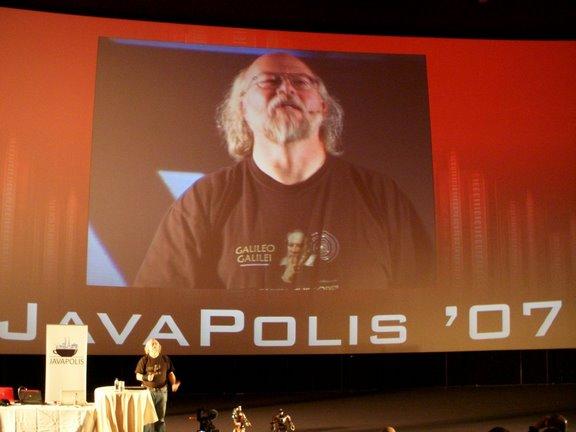
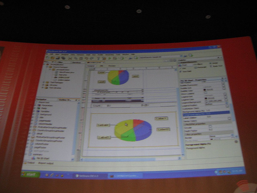
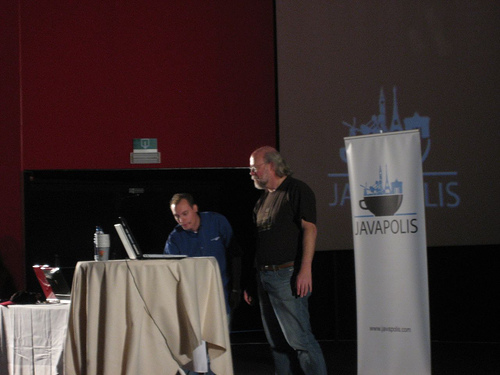

NetBeans 6.0 Seen and Heard at Javapolis 2007
January 2008
The NetBeans team and community received an auspicious start to the recent
Javapolis 2007 conference when James Gosling expressed excitement about the
newly released NetBeans 6.0 IDE in his keynote address.
Speaking a month ago in Antwerp, Belgium, to three conference halls packed with
developers, Gosling singled out for praise key features of the new
version of the NetBeans IDE, including smarter code completion, refactoring
and navigation in the improved editor. He extolled NetBeans' extended
support for other programming languages, such as C, C++, Ruby, Jruby,
JavaScript, and PHP, further adding that developers could also work with
independently-created languages in the IDE.
  
(From left to right: James Gosling - Picture by Frank Toussaint;
IReport for NetBeans demo; Giulio Toffolli and James Gosling)
Proving that there is no stronger endorsement than one from the
renowned father of Java, flocks of conference attendees descended
on the NetBeans booth for first-hand demos from NetBeans
technology evangelist Brian Leonard, who noted that many were Eclipse
users with keen interests in project import and key bindings support.
The introduction of JasperSoft's IReport
for NetBeans plugin also made a comparable splash at the five-day
conference. IReport founder and lead engineer Giulio Toffoli took the
stage, with Gosling watching on, to give a well-received demo of the
plugin. An impressive number of developers visited the neighboring
JasperSoft booth afterwards and conveyed their excitement about IReport and
NetBeans's integration.
More NetBeans 6.0 news from JavaPolis 2007
NetBeans
6.0 Announced at JavaPolis
(Parleys Edition 03)
James
Gosling Kicks Off JavaPolis Conference 2007 (Parleys Edition 04)
JasperSoft's
IReport for NetBeans Press Release
Blogs
Sun
at JavaPolis Conference
JavaPolis
2007 - University
JavaPolis
2007 - The Techie Bits
JavaPolis Day 3
Click here
and here
for pictures from Javapolis 2007.